With the Visual Editor you can construct and run EQL queries quickly and easily with a drag and drop interface, and return your results in tables or even simple charts.
The Visual Editor cannot replicate some of the more complex EQL capabilities, (sub-querying, time zone functions, etc). For those, please use the EQL Editor. For more information on EQL, please see the EQL User Guide.
Navigating the Visual Editor
The Visual Editor is made up of four main components:
In the Sidebar you can search or browse through all tables and saved Data Views, along with their respective columns, and drag and drop the items you need.
The Visual Editor Pane is where you drop selected tables and Data Views, manage table relationships, as well as run and save queries.
When you open the Query Editor for the very first time, the Visual Editor Pane will be in collapsed view. Click on the "down-caret" top right to expand this pane.
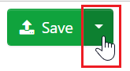
The Column Manager is where you drop selected columns so they can be quickly and intuitively reordered, renamed, hidden, or removed. You can further adjust your data set with the available filter, aggregation, and sort settings. Users with access to both Environmental and Ergonomics tables can switch between them using the Data Source drop down. Users with access to more than one System can switch between them using the System Model drop down.
For users with access to multiple systems, when saving a query or Data View, it will be stored in both the System in the System Model drop down and the System the Data Preparation Tool was loaded from.
After running your query, the Result Pane is where you can browse through your results, toggle between viewing the results as a table or chart, and export your data in Excel (.xlsx/.csv), JSON, or XML formats.
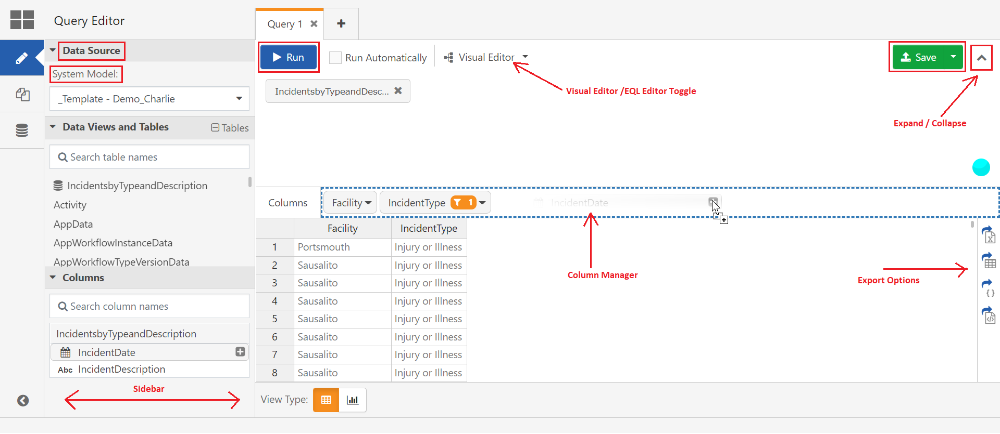
Working with the Visual Editor
Select a Data View or EQL table:
The Data Views drop down is active by default, and you can use the drop down to browse the available Data Views. Selecting one will automatically place it in the Visual Editor. Only one Data View can be used at a time in this mode, so selecting a different Data View will also switch the Data View that appears in the Visual Editor.
For users with access to multiple Systems, Data Views can only be run when the System in the System Model field matches the System the Data Preparation Tool was loaded from.
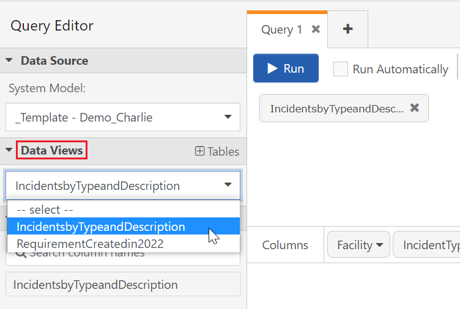
To use standard EQL tables or multiple Data Views you can click the Tables action link to switch to Data Views and Tables. You can scroll through the tables and available Data Views or use the search to find a specific table. Data Views can be identified by the icon. You can click and drag the desired table into the Visual Editor pane, or click on the icon to add it automatically.
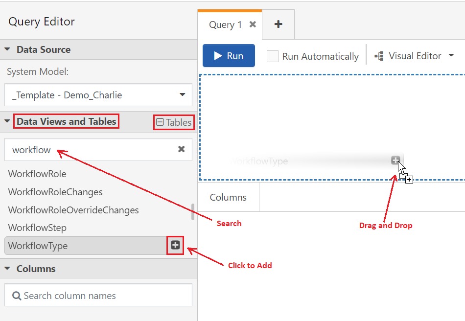
If you need to remove a table, click the icon. If the editor contains multiple tables, removing the parent tables will remove all tables.
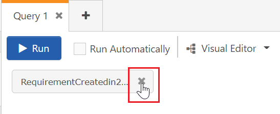
Manage table relations:
If you add multiple tables to the Visual Editor pane, the Data Preparation Tool will attempt to create a "natural join" automatically. A successful natural join will look similar to this:
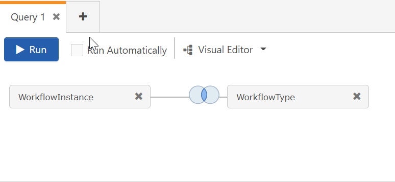
If no natural join exists, the Tool will notify you with an exclamation point in the join symbol:
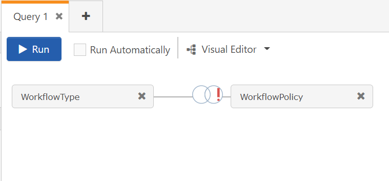
In either case, you can click on the join symbol to create an "explicit join". If you're converting from a natural join, uncheck the Natural Join box.
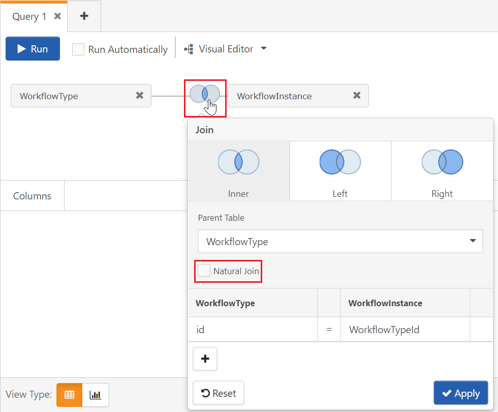
Click on the "join" symbol for the type of join you're trying to create. By default, the editor will consider the first table the parent for all other tables added. To create a join with a different parent, select one from the Parent Table field. Click on the fields below the table names to see a list available rows to use in the join. You can join additional rows by clicking the icon. Unneeded rows can be deleted with the icon. Use the Reset button if you want to undo your changes, or the Apply button to implement the join. For more information on joins, see Relations
Currently, the Data Preparation Tool only supports the joins pictured above. Other joins will require use of the EQL Editor.
Add columns:
Adding a table or Data View to the Visual Editor automatically adds that table to the Columns section of the sidebar. Click on the table in this section to bring up a list of available rows. You can scroll through the rows or use the search to find a specific row. You can click and drag the desired row into the Column Manager, or click on the icon to add it automatically. See the Tables sections of the EQL User Guide for information on a table's columns and natural joins.
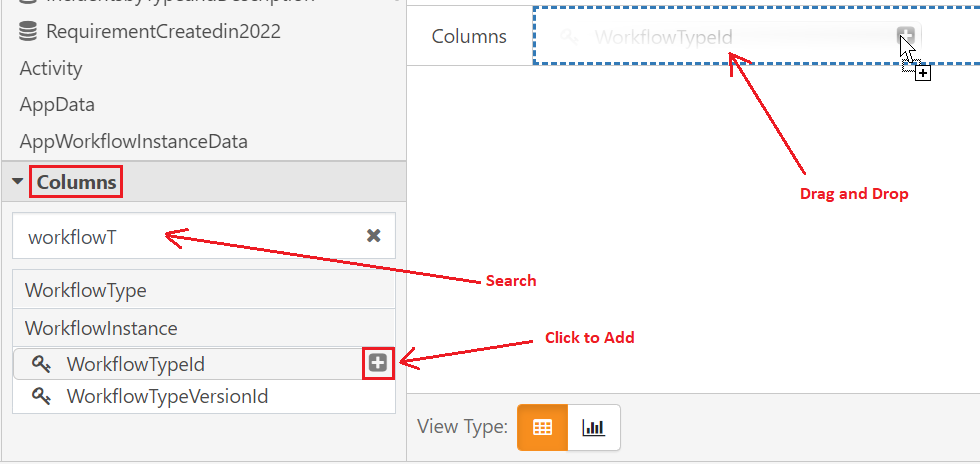
Once a column has been added to the Column Manager, you can click on the column to display a list of adjustments you can make.
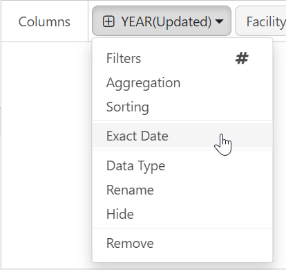
Click Filters to bring up the Filters window. Is empty and Is not empty are options for all columns, but other filtering options are available and vary by the type of data returned by the column.
Text fields use the conditions Contains, Starts with, Ends with, Exactly matches, or Does not match. You can then enter text to use for the filter in the Value field.
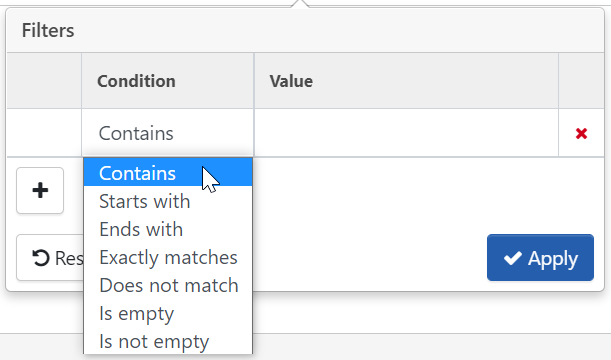
Numeric, date, and true/false fields use relational operators.
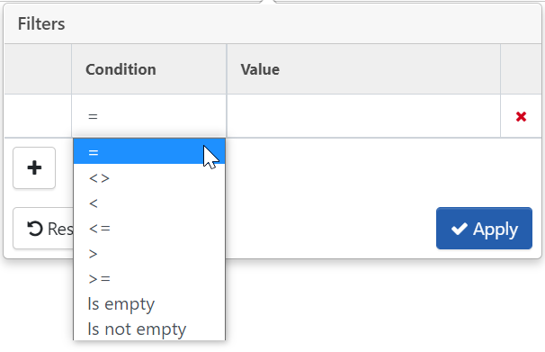
Click Aggregation to bring up a list of aggregation types. All columns can make use of Count, but numeric and date columns can also use Sum, Minimum, Maximum, and Average.
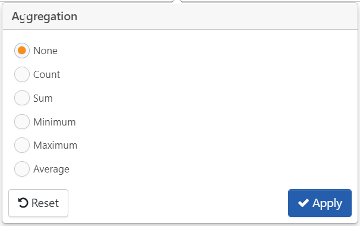
Sorting will give you the option to sort the column.
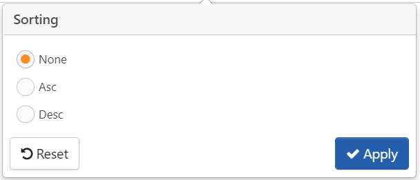
When adding a column that contains date data, the column will initially return only Year data. You can click on the icon to add Month and Day data under separate columns, or display the entire date in one column by selecting the Exact Date option.
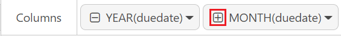
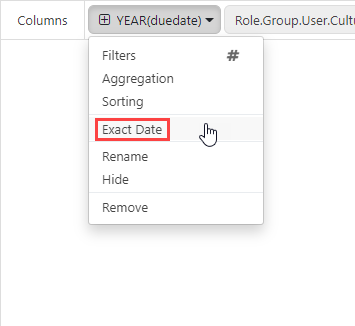
You can use Hide to use a column in your query, but keep its data out of the results you see. Hidden columns can be identified in the Column Manager by their lighter appearance.
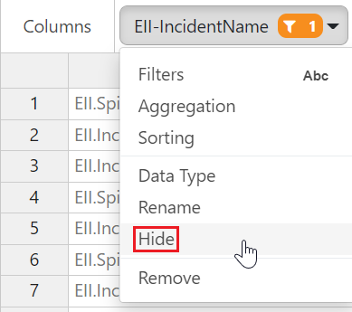
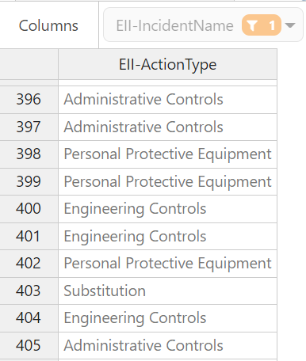
To make hidden columns visible, bring up the column menu and select Show.
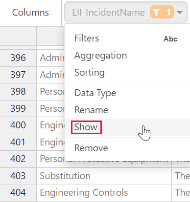
You can also easily change the order in which the columns appear by clicking on the column and dragging it to the desired position.
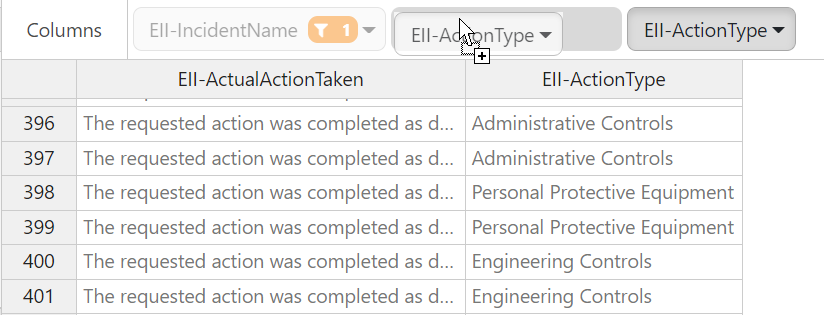
You can view the EQL syntax of your query at any time by clicking on the action link marked Visual Editor, and select EQL Editor.
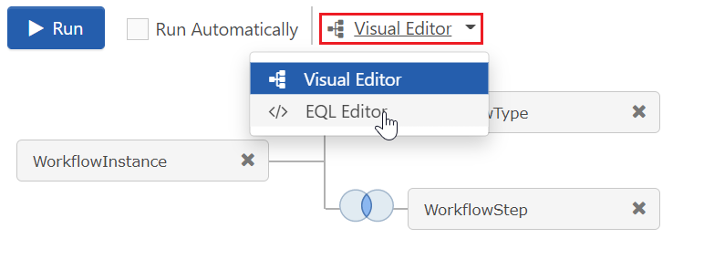
Editing your query while in this view will disable the Visual Editor for the query in that tab. If you want to make edits with EQL syntax, click on the Copy button, click on the white '+' icon to create a new tab, and paste the query there.
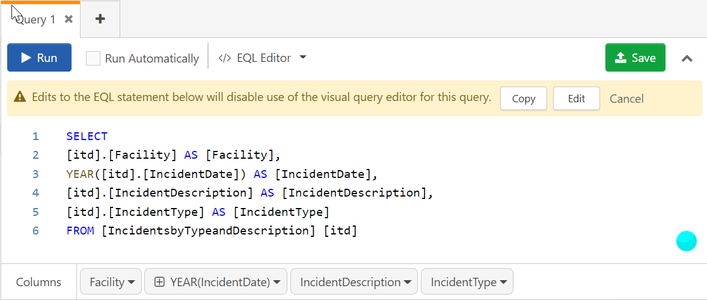
Running and Saving Queries
Once you have constructed your query, you can click the Run button or press Ctrl + R on your keyboard to run it. You can also check the Run Automatically box, which will execute your query each time you add, edit, or remove a table or column.
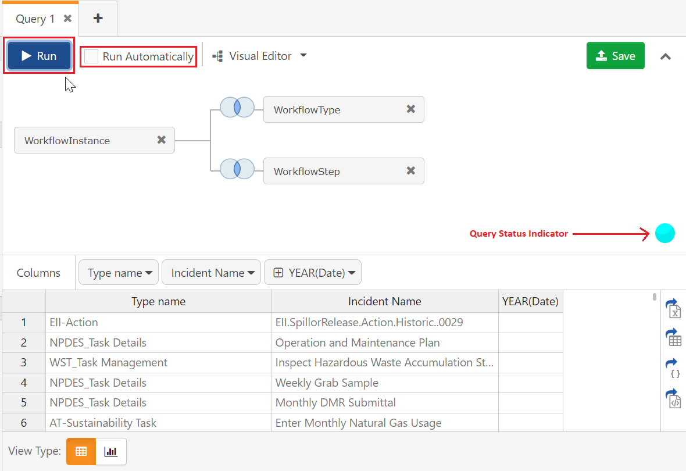
It is quite common to run queries multiple times as they are being constructed in order to ensure that you have exactly the data set you need. However, increasingly complex queries require more and more processing power to execute, and repeatedly running extremely complex queries can have a significant impact on the overall performance of your system. In order prevent this, the Data Preparation Tool monitors the complexity of the query you have executed, and displays the Query Status Indicator to signal you of the stress being put on your system each time you run it. It will return one of five statuses:
Excellent
Good
Satisfactory
Poor
Extra Resources Required
Queries with this status will display a warning. If run more than once in succession, the Run button will display a "cool-down period", which will prevent you from running the query again for a few seconds. Adjusting the query and running it again with an improved status will allow you subsequent runs without a cool-down period. Additional runs requiring extra resources will increase the length of the cool-down period.
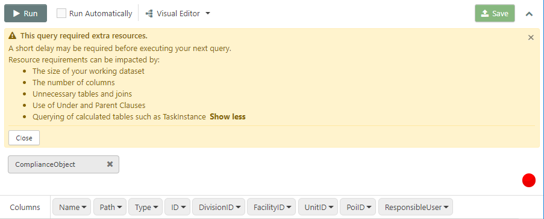
By default, your queries will output in Table view, but the Visual Editor can also display results as a chart. Click on the button in the View Type section to configure your columns.
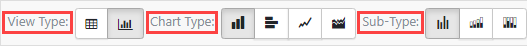
When switching to Chart view, the Column Manager will adjust to allow you to use columns in either the X-Axis or Y-Axis. By default, all of your selected columns will be in the X-Axis; click on a column to drag and drop it to the Y-Axis. Columns in the Y-Axis must use some form of aggregation; if you have not set one before moving it, the Tool will use Count by default. If you would like to choose a different aggregation type, click on the column and select Aggregation from the menu.
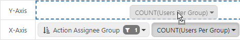
Click the Run button or press Ctrl + R on your keyboard to display the chart. The Query Status Indicator is still active in this view.
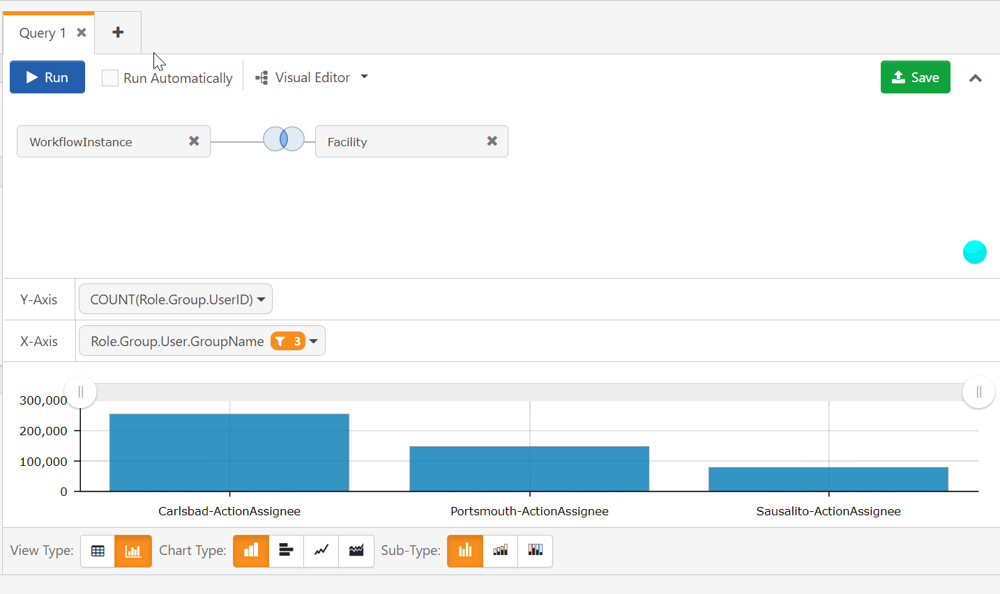
You can display your results in the following chart types:
Column (with sub-types of Regular, Stacked, and 100% Stacked)
Bar (with sub-types of Regular, Stacked, and 100% Stacked)
Line
Area
Click the Save button top right to save your query. All saved queries in the system you are working must have a unique name. If you're saving an existing query, you can keep the Update with a new Version box checked to overwrite the previously saved query, or uncheck it to save it as a new query. You can find your saved query in the Query Library.
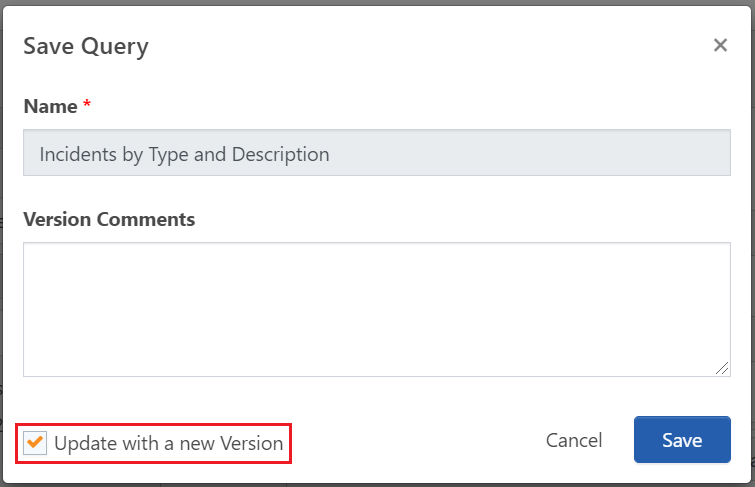
Users with appropriate permissions can save their queries as Data Views. The Save button will now have a down-carat on the right; click to bring up the Save as Data View option. Along with the Title, you are required to choose an EQL Name for your Data View. The name can only contain letters and numbers; spaces and special characters cannot be used. Both the EQL Name and Title must be unique to the system you're working in.
Permissions: Users (even those in the Administrators group) must be in the package role 'DataViewCreateAndEdit' to create Data Views and access the Data Views Library.
Exporting Results
Once you have run your query, you can use the controls on the far right of the Results Pane to export your data.
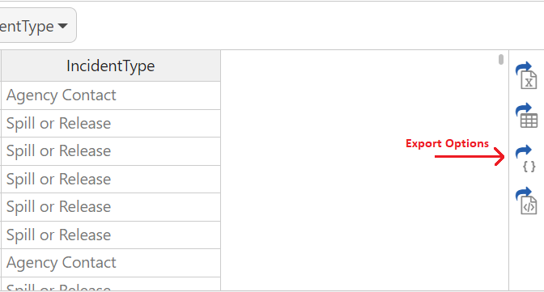
You can save your results in one of the following formats:
 icon. You can click and drag the desired table into the Visual Editor pane, or click on the icon to add it automatically.
icon. You can click and drag the desired table into the Visual Editor pane, or click on the icon to add it automatically. Excellent
Excellent
 Satisfactory
Satisfactory Poor
Poor Extra Resources Required
Extra Resources Required


 JSON
JSON